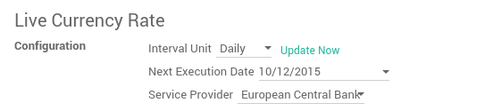
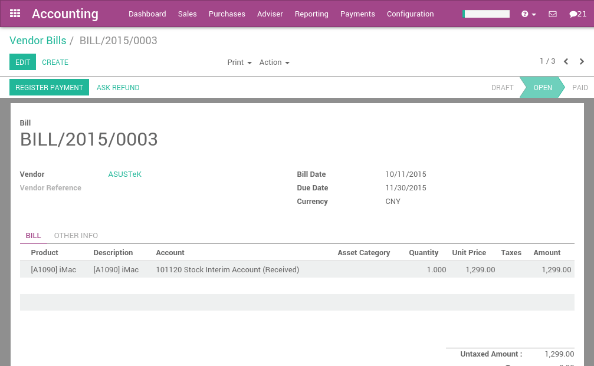

In Odoo, every transaction is recorded in the default currency of the company. Reports are all based on the currency of the company. But for transactions occurring in another currency, Odoo stores both the value in the currency of the company and the value in the currency of the transaction.
When you have a bank account in a foreign currencies, for every transaction, Odoo stores two values:
- The debit/credit in the currency of the company
- The debit/credit in the currency of the bank account
Currency rates are updated automatically using yahoo.com, or the European Central bank web-services.
Configuration
Activate the multi-currency feature
In order to allow your company to work with multiple currencies, you should activate the multi-currency mode. In the accounting application, go into make sure the Allow Multi-currencies box is ticked. Provide a Currency Exchange Gain / Loss account, then click on Apply.
Configure currencies
Once the Odoo is configured to support multiple currencies, you should activate the currencies you plan to work with. To do that, go the menu . All the currencies are created by default, but you should activate the ones you plan to support. (to activate a currency, check his active field)
After having activated the currencies, you can configure the parameters to automate the currency rate update. These options are also in the settings of the Accounting application, in the bottom of the page:
Click on the Update Now link to update the currency rates now.
Create a new bank account
In the accounting application, we first go to , and we create a new one.

Once you save this bank account, Odoo will create all the documents for you:
- An account in the trial balance
- A journal in your dashboard
- Information about the bank account in the footer of your invoices if checked the box Show in Invoices Footer
Example: A vendor bill in a foreign currency
Based on the above example, let's assume we receive the following bill from a supplier in China.
In the , this is what you could see:
Once you are ready to pay this bill, click on register payment on the bill to record a payment.

That's all you have to do. Odoo will automatically post the foreign exchange gain or loss at the reconciliation of the payment with the invoice, depending if the currency rate increased or decreased between the invoice and the payment date.
Note that you can pay a foreign bill with another currency. In such a case, Odoo will automatically convert between the two currencies.
Customers Statements
Customers and vendor statements are managed in the currency of the invoice. So, the amount due by your customer (to your vendor) is always expressed in the currency of the invoice.
If you have several invoices with different currencies for the same customer, Odoo will split the customer statement by currency, as shown in the report below.

In the above report, the account receivable associated to Camptocamp is not managed in a secondary currency, which means that it keeps every transaction in his own currency. If you prefer, you can set the account receivable of this customer with a secondary currency and all his debts will automatically be converted in this currency.
In such a case, the customer statement always has only one currency. In general, this is not what the customer expect as he prefers to see the amounts in the currency of the invoices he received;